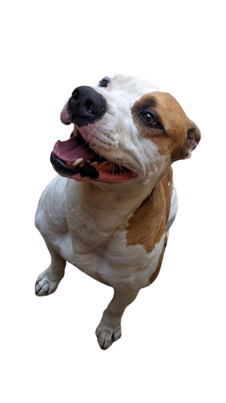

Olá, sou o Heron ! Um Pitbull American Terrier
Sou um pitbull muito lindo e bonzinho, adoro destruir tudo que e destrutivel, principalmente chinelos, tecidos como toalha, tapete, e tudo que estiver ao meu alcance, e se vacilar com comida, eu irei pegar seu pedaço de carne e correr o mais rápido possivel
Fotos
Detalhes sobre a raça
Os American Pit Bull Terriers são cães de porte médio, pelo curto e musculatura definida, que descendem dos antigos cães de tipo Bulldogue e Terriers, originários da Inglaterra. Esses cães eram usados inicialmente como cães de fazenda, para controlar o gado e caçar animais selvagens. Mais tarde, foram explorados em atividades cruéis, como as lutas contra touros, ursos e outros cães. Apesar da sua origem violenta, os American Pit Bull Terriers são cães leais, inteligentes e afetuosos com seus donos. Eles também são muito versáteis e podem se adaptar a diferentes ambientes e atividades, como esportes caninos, guarda, busca e resgate, entre outros. A diversidade e as características únicas dos American Pit Bull Terriers são resultados da sua história evolutiva, ou seja, a raça é o resultado de cruzamentos selecionados de várias raças de cães, e suas raízes remontam ao século XIX.